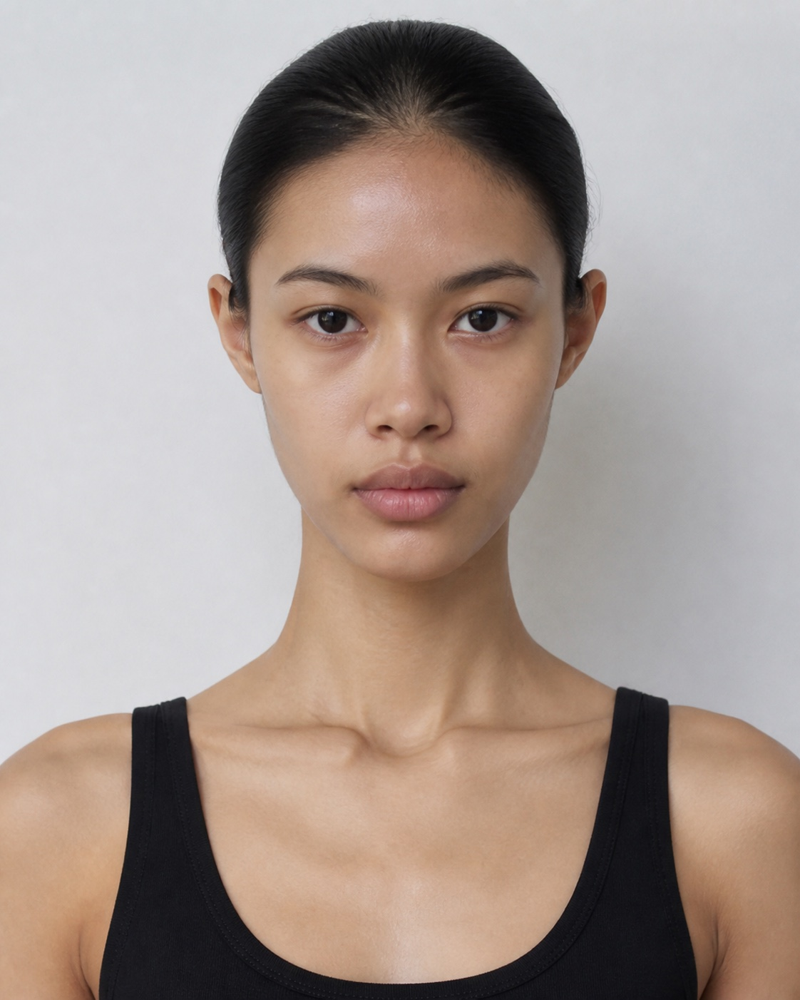
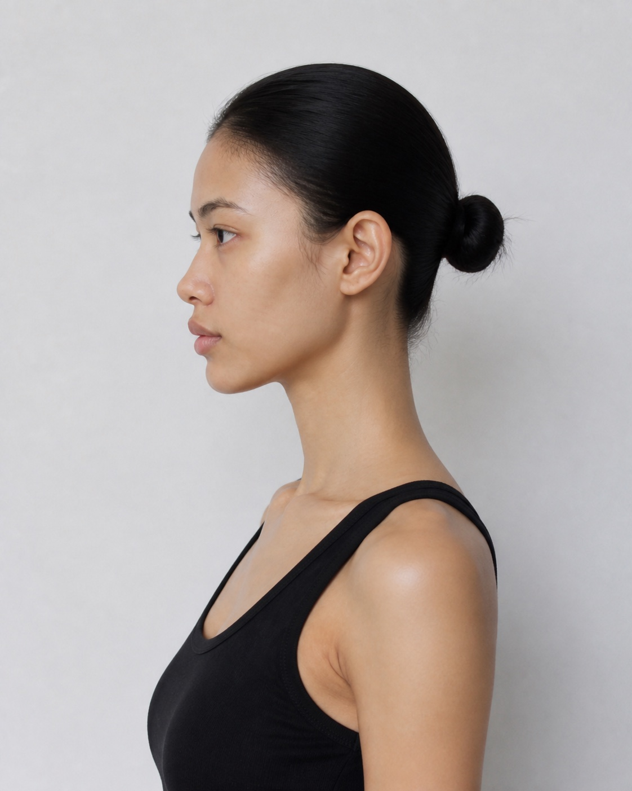
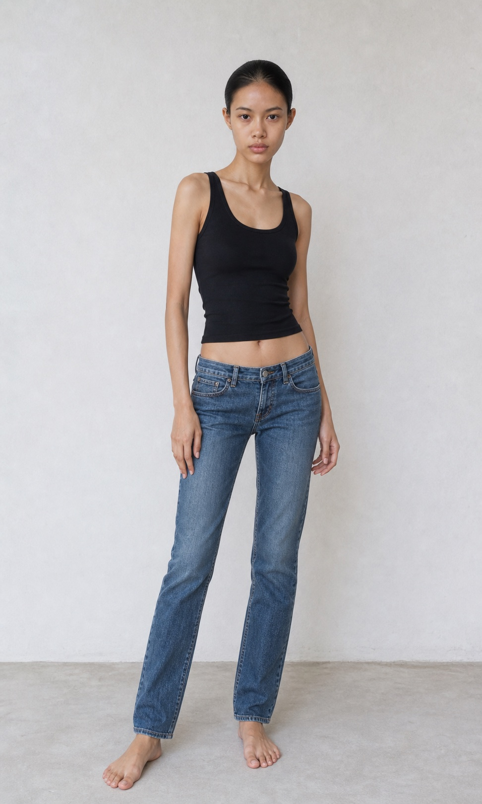

Your photo guide
Phone photos are fine. Keep it natural.
01 · Light & background
Plain wall. Soft daylight facing you.
02 · Keep it simple
Fitted top, shorts or jeans. Hair back, no makeup.
03 · Set your phone
Clean lens. Rear camera, 1×, upright. No filters or retouching.
Photo examples
Match the framing. Use your own recent photos.
Swipe through all 5 views →





Upload at least one photo · JPG, PNG or HEIC.
Back to application